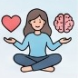
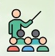
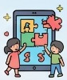
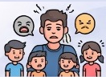
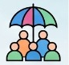

פיתוח מקצועי לתומכות חינוך
מתמונת המצב של היום אל היעד של שנה ב׳
בסיס: התפקיד והילד
- מה תפקידה של תומכת החינוך
- התפתחות הילד וצרכים שונים
- כלים בסיסיים לעבודה בגן
העמקה: רגש ופדגוגיה
- ויסות רגשי וניהול התנהגות
- הכלה ושילוב, תקשורת מיטבית
- ביטחון מקצועי, יוזמה וניהול קבוצה



עשרה מפגשים על קו אחד
מפגש בחודש, מאוקטובר עד יוני. לחצו על מפגש בקו כדי לראות מה למדו ומה יישמו בגן.
איפה אנחנו עכשיו
ממצאי השאלון שמילאו הגננות בדבוריה ובאכסאל
הגננות רואות בתומכת חלק בלתי נפרד מהצוות.
צריך לעבור ליכולות רגשיות ופדגוגיות מתקדמות.
ויסות רגשי, ניהול התנהגות ותקשורת בין־אישית.
חוסר גמישות ויוזמה בעת משבר
לעיתים חסרה היכולת לפעול באופן עצמאי ומגיב כשהמצב בגן משתנה.
מענה לשונות וצרכים מרובים
קושי לתת מענה אישי לכל ילד במקביל לניהול השגרה של הגן.

התמודדות עם התנהגות מאתגרת
שמירה על גבולות וסדר מול התנהגויות מורכבות של ילדים.
מעכשיו אל היעד
כל מיומנות שהגננות ביקשו, ולאן אנחנו רוצים לקחת אותה בשנה ב׳ (לפי תדירות ההופעה בשאלון)
היעד: זהות מקצועית של שותפה
מה תומכת החינוך תדע ותעשה בסוף שנה ב׳
חיזוק הביטחון המקצועי והיוזמה
התומכת מרגישה שותפה מלאה, מציעה רעיונות ולוקחת חלק פעיל בתכנון הפעילויות.
פיתוח יכולת ניהול קבוצה
התומכת מנחה לבד פעילות בקבוצה קטנה או עבודה פרטנית עם ילד.
"ביטחון מקצועי, יוזמה ותחושת אחריות"
זה מה שהגננות מצפות: שהתומכת תפתח זהות של שותפה משמעותית בעשייה החינוכית.
ארבעה תחומים, שני מפגשים בכל תחום
התחומים מסודרים לפי מידת הביקוש בשאלון
ויסות רגשי וניהול התנהגות
המבוקש ביותרכלים להצבת גבולות ולהתמודדות עם מצבים מאתגרים בגן.
מה קורה לילד בהתפרצות, ואיך אני נשארת רגועה.
גבולות עקביים ותגובה אחידה עם הגננת.

הכלה ושילוב ילדים עם צרכים שונים
זיהוי ילדים שזקוקים לתמיכה ומענה מותאם לשונות.
תצפית ממוקדת וזיהוי צורכי הילד.
התאמות קטנות לכל ילד בלי לעצור את הגן.
תקשורת מיטבית וכישורים חברתיים
תקשורת עם הילדים, עם ההורים ובתוך הצוות.
תיווך בקונפליקט ופתרון בעיות רגוע בין ילדים.
גבולות מקצועיים: מה אומרים ולמי מפנים.
למידה דרך משחק וכלים דיגיטליים
העשרה פדגוגית, טכנולוגיה ופיתוח שפה דרך משחק.
משחק כמנוף לשפה, לעצמאות ולקשר.
כל תומכת מציגה פעילות שהובילה בקבוצה קטנה.